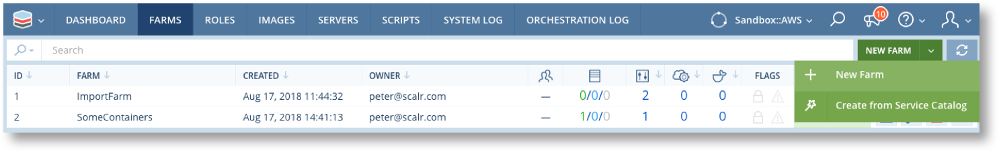
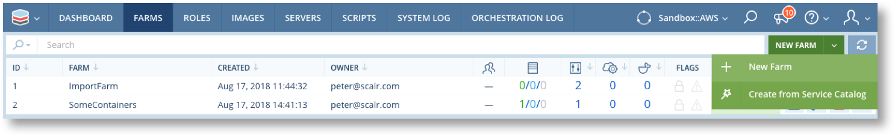
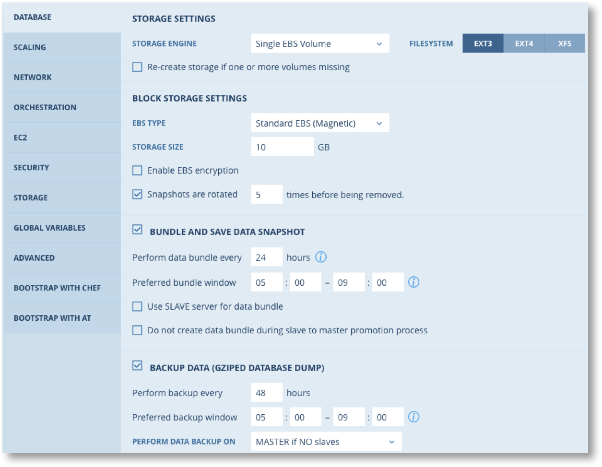
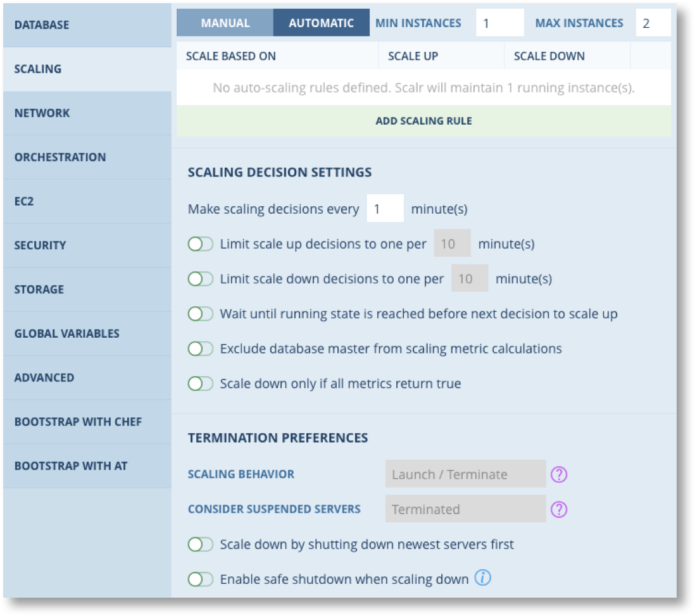
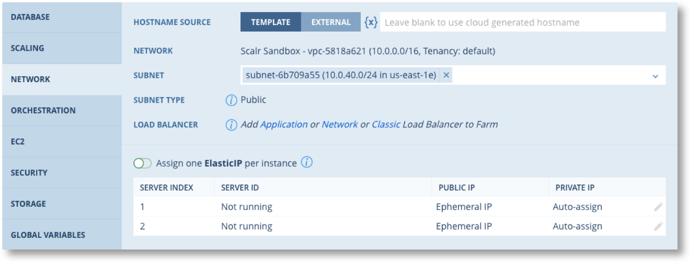
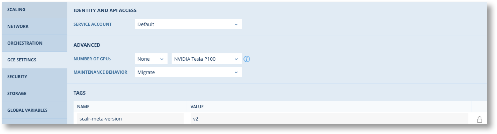
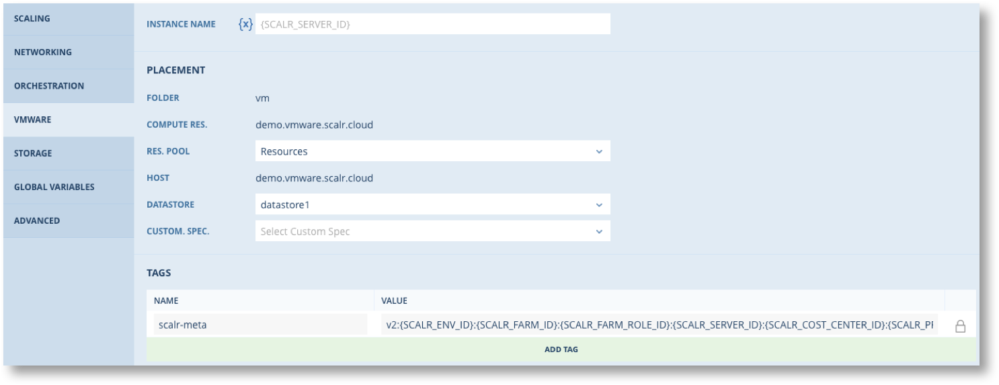
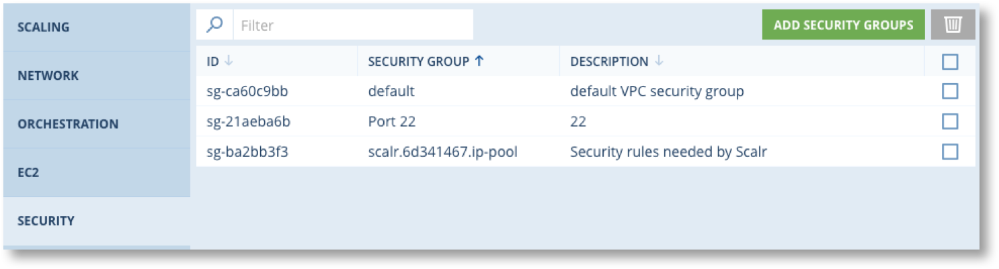
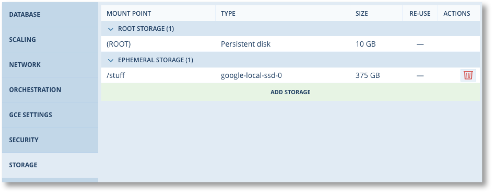
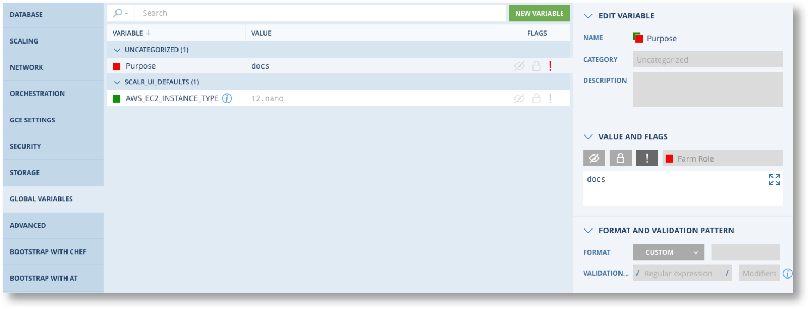

Farm Configuration¶

A Farm is the collection of Roles, Orchestration rules, network configuration, cloud services and much more that defines the desired deployment state of a cloud based system. When a Role is added to a Farm this is known as a “Farm Role”. It inherits all the attributes of the Role itself but extends the configuration to include selection of clouds, locations, network, security groups, additional orchestration rules etc.
Overall the Farm defines the “Desired State” of the Cloud deployment. When a Farm is launched Scalr’s Desired State Engine (DSE) begins a continuous cycle of monitoring the cloud infrastructure to determine if the Farm is in the desired state or not, and makes adjustments by starting and terminating servers in order to achieve the desired state.
Warning
Reconfiguring a running farm can result in servers being stopped and started. Take great care when reconfiguring farms that are for business critical services.
Creating a Farm¶
A new Farm can be created from the main menu  or from the NEW FARM button in the Farm List.
or from the NEW FARM button in the Farm List.
 

Farms can also be cloned from the individual Farm menu  or created from an existing Service Catalog offering. In these two cases the Farms will be pre-populated with Farm Roles and other elements of the Farm configuration. From here on this page deals with creating new Farms only.
or created from an existing Service Catalog offering. In these two cases the Farms will be pre-populated with Farm Roles and other elements of the Farm configuration. From here on this page deals with creating new Farms only.

Farm Parameters¶
| Parameter | Required | Description |
|---|---|---|
| Name | Yes | Unique name (with the Environment) for the farm |
| Timezone | Yes | TZ to be used for all servers launched from this Farm. This is used for Lease Management and Database Backups (for Farm Roles using Database Built-in Automation) |
| Team | No | If set this restricts access to the Farm to the named Teams, otherwise accessible to all Teams with access to the current Environment |
| Launch Order | Yes | Simultaneous : When Launching a Farm launch all Farm Roles at the same time Sequential : Wait until all the servers for a Farm Role are running before launching the next Farm Role. Note that within each Farm Role Scalr will launch servers at the rate of 1 per minute by default. This interval can be increased in the Scaling tab. |
| Project | Yes | Select the required Project/Cost Center |
Global Variables Global Variables can be defined at the Farm level to be inherited by Farm Roles. As with all Global Variables you can define at what scope the value can or cannot be set.
In the Advanced section you can set parameters for updating the Scalarizr agent on all servers in the Farm. See Updating the Scalarizr Agent for more details.
Note
By default Scalarizr checks for updates every hour  .
.
Farm Roles¶
The next step in creating Farms is to add one or more Farm Roles to define the servers and their configuration. A Farm Role is analogous to a ‘tier’ in an application stack, such as the Webapp, Load Balancer or database tier.
Click of the ADD FARM ROLE tab. You can select from a variety of pre-configured roles from the Quick Start list (if configured), or select a role from the various categories available from the filter drop down menu.

Now select the cloud (Multi-cloud Roles only) and enter the Cloud specific parameters for the Farm Role.

Click  and then click on the Farm Role name on the left hand panel to continue configuration of the Farm Role.
and then click on the Farm Role name on the left hand panel to continue configuration of the Farm Role.

There are several tabs available to continue the configuration. Some tabs are dependent on other aspects of the configuration.
- DATABASE: Only available for Roles from the Database category
- BOOTSTRAP WITH …: Only available if Chef/Ansible Tower is configured for the Environment
- Cloud: A Tab for the specified cloud
The following sections provide explanations of each tab in the Farm Role configuration. These tabs are customised to match the Cloud chosen and the type of role, so not all tabs and options are always visible. Where a tab implements features of a cloud service there are information points you can hover over which will provide an explanation.
Database¶
(For database roles only)
Configure Storage, Snapshot and backup settings for the database. This tab may include database specific settings, e.g. for Redis.
Storage
Includes:
- Configure the type of Storage
- Set re-use options
- Choose the Snapshot to create the database volume from
Snapshots
You have the option of selecting the interval between two Snapshots. You can also specify a time window during which these Snapshots should be performed. Database Snapshots contain a hot copy of database data directory, a file that holds binary log position and debian.cnf. When your Farm starts the following steps are performed:
- The database master downloads and extracts a snapshot from storage depending on cloud platform (EBS volume for Amazon);
- When data is loaded and the master starts, slaves download and extract a Snapshot as well;
- Slaves will sync with the master for some time.
Scaling¶
Auto Scaling in Farm Roles is a built in feature of Scalr that provides a consistent scaling capability across all Cloud platforms even for those clouds that don’t have built-in scaling. If you are using the Cloud Platform’s auto scaling features then you should set Scaling to Manual in the Farm Role.
Note
It is recommended that you disable any scaling features in the Cloud Platforms you use and only use Scalr built-in scaling. This will avoid any conflicts or duplication of effort that could cause service disruption and impact your costs. It will also ensure that your auto scaling parameters are applied consistently, regardless of where your application is deployed.
Auto Scaling is a sophisticated feature of Scalr and is described in detail in Auto Scaling.
If you set scaling to Manual there are some options in Scalr for manually scaling applications up and down. See Manual Scaling for more details.
Network¶
In the Network tab you may specify how Scalr should compute the hostname for the Servers in this Farm Role, view the Load Balancer settings, configure subnet and IP address assignment.
Hostname Source
There are two possible hostname sources: a hostname template or an external source via a Webhook.
Warning
These settings may be affected by a Hostname Configuration Policy, and will not be usable if a Policy has been defined.
| Template | Enter the hostname in the text field, and Scalr will assign that hostname to your Servers. You may use Global Variable Interpolation in the Hostname template. If the template is left blank, Scalr will use the cloud platform’s default hostname, or the Scalr server ID if the cloud platform does not provide a default. |
| External | The Webhook and Integration Endpoint must be created first. Before launching a Server, Scalr will make a call to the selected webhook to retrieve a hostname. This webhook call is made before all the other events related to the Server (BeforeInstanceLaunch, HostInit, etc.) are triggered. |
Load Balancer. You must link a Load Balancer Service to the Farm and associate the LB with the Farm Role via that interface. The Network tab will show the linked LB once this is done. See Using Cloud Services in Farms for more details.
Subnet and IP. You can amend the subnet settings made when the Farm Role was added and choose how to assign IP’s.
Farm Role Orchestration¶
Orchestration rules define actions to be performed at specific events during the lifecycle of servers. Orchestration rules associated with a Farm Role can be inherited from the Role and from the Scalr, Account and Environment scopes.
To configure Orchestration Rules click on the Orchestration tab on the left side of the Farm Role details screen.

Note
Orchestration rules can be defined in many places in Scalr. What follows covers all aspects of rule configuration regardless of where they are configured.
Orchestration Rules are made up of three main elements.
| Trigger Event | The lifecycle event of the a server that will cause the Orchestration Rule Script to execute such as OnHostUp or BeforeHostTerminate |
| Target | Criteria for identifying the server on which to run the Script which need not be the triggering server and can be multiple servers |
| Action | The script, Chef Cookbook or Ansible Tower job to be run. |

You must create the Script and any Global Variables that are required before creating the Rule.
Trigger Event¶
First select the Trigger Event for this rule. The following table describes each event and the state of the Server when the event fires.
| Event | Description |
|---|---|
| BeforeInstanceLaunch | The new instance will be launched in few minutes. |
| HostInit | The Instance finished booting and Scalr is now configuring the Environment and initializing Services. |
| IPAddressChanged | Public IP address of the instance was changed upon by reboot or within Elastic IP assignments. |
| EBSVolumeAttached | EBS volume was attached to the instance. |
| EBSVolumeMounted | An EBS Volume has been attached and mounted to the Instance. |
| BeforeHostUp | Time for user-defined actions before the instance will be added to DNS, Loadbalancers etc |
| HostUp | The Instance has booted and Environment and Services are running. Instance will now be added to Load Balancer, DNS Zone etc. |
| BeforeHostTerminate | The Instance is flagged for termination and will be terminated after 180 seconds. |
| HostDown | The instance will be terminated. |
| RebootComplete | The Instance has finished rebooting. |
| ResumeComplete | The instance was successfully resumed after a suspension. |
| HostInitFailed | Instance booted up but Scalr environment is not configured and the services are not initialized yet. |
| Custom Events | Any Custom Events defined at this scope or higher. |
| All Events | Rule will fire for any event including Custom Events. |
After an Instance finishes booting the OS, the Scalarizer Agent starts configuring your Environment in a certain order as follows.
- All EBS / Disk Routines are executed.
- Deployment Routines are executed.
- Server Configuration (including vhosts) Routines are executed. If you wish to work with Virtual Hosts, you can assign a Script to the BeforeHostUp Event.
Target¶
You must define the target for executing the script. The default is to execute only on the instance that triggered the event. The other options are as follows. Note that availability of targets depends on the scope at which the rule is being defined.
| Target | Scopes | Description |
|---|---|---|
| Triggering Server |   |
The script will only be executed on the server that triggered the event. |
| Triggering Server with <specified OS> |   |
The script will only be executed on the server that triggered the event providing it is the specified Operating System. |
| All Servers in the Farm | |
The script will be executed on all running servers in the Farm. |
| All Servers of the Farm Role | |
Script will execute for all servers running from the same Farm Role as the triggering server in the Farm. |
| All Roles with Selected Tags | |
Script will execute for all servers running from Roles with the specified tag in the Farm. |
| All Roles with Selected OS | |
Script will execute for all servers in the Farm with the specified OS. |
| Selected Farm Roles | |
Script will execute for all servers in the given Farm Role(s) in the Farm. |
Action¶
There are three choices for the Action for a rule.
Advanced Configuration¶
The advanced configuration section allows you to control various aspects of how the Action is executed.
| Parameter | Description |
|---|---|
| Execution Mode | Blocking: Scalarizr will wait for your Script to finish executing before firing and processing further events |
| Non-Blocking: Scalarizr will not wait for your Script to finish executing before firing and processing further events | |
| Timeout | Length in seconds before the script should timeout. This should be increased for complex actions, especially those that downlada from the internet. |
| Order | Sequence in which rules must be executed. This defaults to the order in which the rules are created. |
| Run As | For Scripts and Chef only defines the user to execute the script as on the server. |
Cloud Provider Tabs¶
Scalr supports a variety of configuration options for each cloud provider. The appropriate tab will be available for setting these options.
EC2¶

| Parameter | Description |
|---|---|
Instance Name
|
|
IAM Instance Profile
|
To have instances of this Farm Role assume a specific Amazon IAM Instance Profile, select that IAM Instance Profile here. |
Use Spot Instances
|
|
| Tags | Custom Tags can be added |
| AKI ID | To use a custom Linux Kernel with instances of this Farm Role, specify an Amazon Kernel ID (AKI) |
| ARI ID | To use an Amazon Ram Disk with instances of this Farm Role, specify an Amazon Ramdisk ID (ARI) |
| Cluster Placement Group | To launch all instances of this Farm Role as part of an Amazon Placement Group, specify the Placement Group name here |
Backup Instance Types
|
Optionally specify additional instance types to try if provisioning of your Farm Role configured instance type is not available. This is typically to fallback to a smaller size when no more space for your larger instance type is available. |
Instance Tenancy
|
See Dedicated Instances for details.
|
| Instance Initiated Shutdown Behaviour | Determines whether an instance should be Suspended or Terminated when a Shutdown is initiated from inside the instance. |
Launch instances as EBS-Optimized
|
|
Enable Detailed CloudWatch monitoring
|
|
Enable T2 Unlimited
|
Enabling T2 Unlimited allows applications to burst beyond the baseline for as long as needed at any time. If the average CPU utilization of the instance is at or below the baseline, the hourly instance price automatically covers all usage. Otherwise, all usage above baseline is billed. |

{kind=link}
{kind=link}
{kind=link}
{kind=link}
{kind=link}
{kind=link}
{kind=link}
Azure¶

| Parameter | Description |
|---|---|
Storage Type
|
Enable Managed Disks |
Availability Set
|
To provide redundancy to your application, it is recommended to group two or more virtual machines in an availability set. This configuration ensures that during a planned or unplanned maintenance event, at least one virtual machine will be available and meet the 99.95% Azure SLA. The availability set of a virtual machine can’t be changed after it is created. |
| Tags | Custom Tags can be added |
GCE Settings¶
{kind=link}
| Parameter | Description |
|---|---|
| Service Account | Service account to be set at instance creation |
Number of GPU’s
|
|
Maintenance Behavior
|
Default behavior is to Live Migrate. See Setting Instance Availability Policies. |
| Tags | Custom Tags can be added |
OpenStack¶

| Parameter | Description |
|---|---|
Instance Name
|
|
| Server Group | Specify a Server group for Affinity or anti-affinity settings. |
| Metadata | Custom metadata Name-value pairs can be added |
VMware¶
{kind=link}
| Parameter | Description |
|---|---|
Instance Name
|
|
| Res. Pool | Change the Resource Pool that was selcted when the Farm Role was added. |
| Datastore | Change the Datastore that was selcted when the Farm Role was added. |
| Custom Spec. | Add a Custom Specification. |
| Tags | Add Tags as required. |
Security¶
{kind=link}
For all clouds except VMware and Google you can edit the Security Group settings directly through Scalr.
Warning
Some changes that are saved through this tab are applied to the Cloud Platform immediately and will impact running servers.
* New Rules/groups are applied to all running servers.
* Deleted rules/groups are applied only if the Rule was created since the server was launched.
* Rules applied when the server was launched WILL NOT be affected by changes made in Scalr
Storage¶
{kind=link}
Where the Cloud Platform and Operating System permits you can configure root and additional storage for the servers, subject to any Policy limitations. See Configuring Storage for detail of the Storage configuration options for each Cloud provider.
Global Variables¶
{kind=link}
Global Variables can be defined at the Farm Role and, if permitted, values can be set for Global Variables defined at higher scopes.
Advanced Options¶

The following advanced configuration options are available for all Farm Roles.
| Option | Description |
|---|---|
| Disable scalr agent management of iptables | By default, Scalarizr will automatically configure iptables so that traffic to its API control ports is allowed in. In some situations, you might want to disable this behavior (e.g. because you’re managing iptables yourself, and don’t want Scalarizr to update them, or because you’d like finer-grained iptables rules than the ones that are configured by Scalr). This setting also controls the Windows Firewall on Windows deployments. |
| Disable scalr agent time synchronization | Disable/Enable NTP management so that the agent does not re-set and sync to our default timeservers on startup. The most common use case for this is to disable NTP management and then configure your own NTP server via an Orchestration script. |
| Rotate Instances Orchestration Logs | Once rotated, Orchestration Logs are no longer available. |
| Abort Server initialization when a Blocking HostInit or BeforeHostUp Script fails (non-zero exit code) | Scalr gives you the option to abort Server Initialization (i.e. place the Server in Failed State) when one of your initialization scripts fails (i.e. exits with a non-zero exit code). When you check this option, Scalr will mark Servers as failed if any Blocking Script triggered upon the BeforeHostUp Event exits with a non-zero exit code. View the documentation for the BeforeHostUp Event for more detail and important compatibility information. |
| Reboot after HostInit Scripts have executed | This option allows you to restart your Server after HostInit Scripts have executed and before other initialization actions are executed. This is typically useful on Windows to e.g. change the server’s hostname or joining AD (both of these require a reboot) prior to initializing the Server. |
| Fire HostInitFailed event if agent didn’t send ‘hostUp’ or ‘hostInit’ event after launch | Specify how long Scalr will wait for a Server that was launched to signal it is ready. |
You can also override the Scalarizer Update settings from the Farm if a different cadence or version is required for this Farm Role.
Ansible and Chef in Farm Roles¶
The “Bootstrap by ..” tabs allow you to enable bootstrap by Chef and Ansible for the Farm Role and set the bootstrap parameters. The settings are identical to those used in a Role. See Bootstrap in the Roles section for more details.
Note
Bootstrapping can only be fully configured in a Farm Role if it has NOT been enabled at the Role level. If the Role has bootstrap enabled then it will be enabled at the Farm Role level and cannot be changed. Some limited options do remain configurable at the Farm Role level, such as choosing the Chef environment.